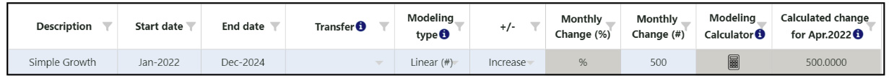
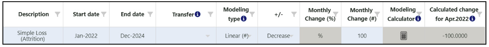
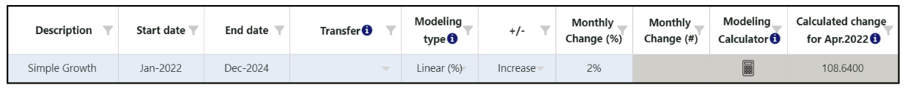
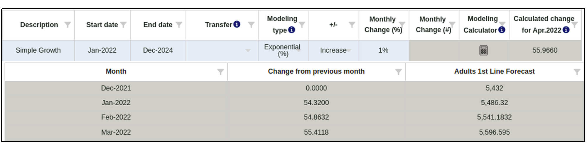
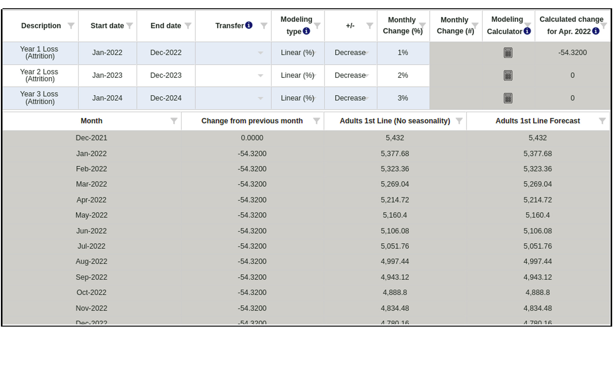
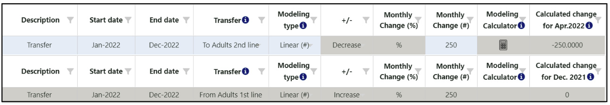
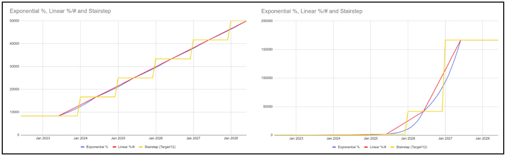

Añadir/Editar nodo
- Modelado/Transferencia
Objetivo
:Si un nodo cambia con el tiempo, un usuario puede utilizar la
pestaña Modelado/Transferencia para modelar el crecimiento/pérdida dentro de
un solo nodo
o una transferencia de un nodo a otro. Tenga en cuenta que esta
funcionalidad solo está
disponible para Nodos de Número (#) y Nodos de Porcentaje (%) (incluyendo
Unidades
de Pronóstico y Unidades de Planificación).
Usando
esta pestaña :
Las usuarias pueden a mano ingrese cualquier cambio deseado a lo
largo del tiempo (crecimiento/pérdida/transferencia) en la parte superior
Tabla, o ellas pueden utilizar el
Calculadora de modelado para calcular la
tasa mensual de
cambio (consulte la sección 'Calculadora de modelado' a continuación para
obtener más información). Cada entrada debe agregarse como filas separadas
por cambio en la tabla superior
(es decir, un nodo no puede crecer ni transferirse en una fila de entrada de
datos; deben ser dos filas separadas).
Reglas
para nodos de transferencia:
- Los nodos numéricos solo pueden transferirse a otros nodos numéricos y
deben pertenecer al mismo nivel.
- Los nodos de porcentaje solo pueden transferirse a otros nodos de
porcentaje y deben pertenecer al mismo padre.
- Las transferencias son siempre negativas desde el nodo de origen y
positivas hacia el nodo de destino.
- No se permite la extrapolación en un nodo que también tiene una
transferencia, ya sea hacia/desde otro nodo.
| Tipo de modelado |
# Cálculo de nodos |
% Cálculo de nodos |
| Lineal (#) |
+/- un número estático cada mes |
N / A |
| Lineal (%) |
+/- un porcentaje estático cada mes, calculado en base al
mes de inicio |
N / A |
| Exponencial (%) |
+/- un porcentaje cada mes, calculado sobre el mes anterior
como un porcentaje móvil |
N / A |
| Lineal (% point) |
N / A |
+/- un porcentaje estático cada mes (por ejemplo, si el mes
inicial es 30 % y el cambio es +1 % cada mes, el próximo mes
es 31 %, el siguiente es 32 %, y así sucesivamente) |
- Haga clic en"Mostrar datos mensuales" para mostrar una tabla y un
gráfico con el nodo
valor a través del tiempo
-
Esta función es útil para ver cómo modelar y transferir
Las entradas afectan los datos mensuales tanto en forma gráfica
como tabular.
-
En los datos tabulares, los usuarios pueden agregar un cambio
manual para un mes específico o ingresar un porcentaje del
índice de estacionalidad.
(solo disponible para # nodos), según sea necesario.
-
Si un usuario marca "El cambio manual afecta el mes futuro", el
monto manual agregado al final del
mes se trasladará al comienzo del mes siguiente. Si ninguno de
estos
Los campos son relevantes, los usuarios pueden desmarcar
"Mostrar (estacionalidad y) cambio manual" para
ocultar estas columnas.
Ejemplos
:
- Crecimiento simple (n.° lineal): el siguiente ejemplo muestra un
crecimiento de la población cada mes en 500/mes desde enero de 2022
hasta diciembre de 2024.

- Pérdida simple (núm. lineal): el siguiente ejemplo muestra la
deserción cada mes por 100/mes desde enero de 2022 hasta diciembre de
2024. QAT utiliza un número negativo para indicar una disminución o
pérdida.

- Crecimiento simple (% lineal): el siguiente ejemplo muestra un
crecimiento constante de la población cada mes en un 2 % desde enero de
2022 hasta diciembre de 2024. QAT ha calculado que este cambio aumenta
la población en 108,64 cada mes.

- Crecimiento simple (% exponencial): el siguiente ejemplo muestra
un crecimiento de la población cada mes del 1 % desde enero de 2022
hasta diciembre de 2024. Debido a que el crecimiento es exponencial, el
cambio difiere cada mes.
- QAT calcula este cambio en 54,32 en enero-22 mes,
- QAT calcula este cambio en 54,86 en el mes del 22 de febrero, y
- QAT calcula este cambio en 55.41 en Mar-22
-
Pérdida de varios años - el siguiente ejemplo muestra una tasa
diferente de deserción (pérdida) cada año. El año 1 (enero de 2022 a
diciembre de 2022) reduce la población en un 1 % o 54,32 cada mes,
el año 2 (enero de 2023 a diciembre de
2023) reduce la población en un 2 % o 95,6 cada mes, etc. QAT
utiliza un número negativo para indicar un disminución o pérdida.

-
Transferir - el siguiente ejemplo muestra una transferencia de
250 pacientes cada mes durante un año, de enero de 2022 a diciembre
de 2022, desde el nodo actual (Adultos 1.ª línea) a otro nodo
(Adultos 2.ª línea). Esta transferencia también
aparecerá en el otro nodo (Adultos 2da línea) atenuada para indicar
un cambio no editable. 
Calculadora de
modelado:
Haga clic en el icono de la calculadora de modelado si necesita ayuda para
calcular el
tasa de cambio mensual. La calculadora de modelado Valor final/cambio
es
disponible para todos los nodos excepto los nodos de agregación, y el
modelado
La calculadora Objetivo anual solo está disponible para nodos
numéricos. Empezar por
seleccionar
a Tipo de modelado (N.° lineal, % lineal o % exponencial),
y luego un Tipo de objetivo (Valor final/Cambio u Objetivo anual):
- Valor final/cambio: Utilícelo si tiene un valor objetivo (no
acumulativo) o un cambio total deseado durante un período específico, en
lugar de una tasa de cambio mensual conocida.
-
Se completarán la Fecha de inicio y la Fecha
objetivo.
basado en el
entradas originales para Fecha de inicio y Fecha de finalización
en el modelado
tabla, que por defecto se basa en el período de pronóstico. El
El usuario puede cambiarlos si lo desea. Estas dos fechas
volverán
en la mesa de modelado.
-
El Valor inicial es el valor del nodo al comienzo del
mes para
la fecha de inicio, según lo calculado por QAT. En otras
palabras, el inicio
El valor es el valor del nodo antes de que se produzca cualquier
cambio en el modelado. Este
El campo se calcula y el usuario no puede modificarlo
directamente.
Si la Fecha de Inicio es el mes posterior al “Mes” en el Nodo
Pestaña Datos, entonces el Valor inicial es igual al "Valor de
nodo"
proporcionado por el usuario en la pestaña Datos del nodo.
-
El Período se calcula como Fecha objetivo - Fecha de
inicio (en
meses).
Este valor no se muestra en la interfaz de QAT, pero se utiliza
en las fórmulas siguientes.
-
Con base en los datos o suposiciones disponibles, ingrese los
datos en uno de
los siguientes campos: Valor final objetivo, Objetivo
Cambio (%) o
Cambio de objetivo (#)
-
Después de proporcionar una entrada, los otros campos serán
se completa automáticamente, así como el 'Calculado final
Cambio mes a mes'.
-
Cuando el usuario haga clic en 'Aceptar', el cambio mensual
(% o #) será
Se vuelve a rellenar en la tabla de modelado principal, según
las fórmulas.
abajo. Todos los cambios negativos se mostrarán como
"disminución" y
Los cambios positivos se muestran como "aumento", con el número
mostrado.
en valor absoluto.
Si el usuario ingresa Valor final objetivo:
|
Lineal (%) |
Lineal (#) |
Exponencial (%) |
| Cambio objetivo (%) |
(Valor final objetivo - Inicio
Valor) / Valor inicial |
| Cambio de objetivo (#) |
- |
Valor final objetivo - Valor inicial |
- |
| Cambio mes a mes calculado |
(Valor final objetivo - Inicio
Valor) / Periodo |
| Cambio mensual (%) |
(((Valor final objetivo - Valor inicial)/
Período) / Valor inicial) * 100 |
- |
((Valor final objetivo / Valor inicial) ^ (1
/
Período) - 1) * 100 |
| Cambio mensual (#) |
- |
Cambio (#)/Período |
- |
Si el usuario ingresa Cambio de objetivo (%):
|
Lineal (%) |
Lineal (#) |
Exponencial (%) |
| Valor final objetivo |
Valor inicial + (Valor inicial *
Cambio objetivo (%)/100)/100 |
| Cambio de objetivo (#) |
- |
Valor final objetivo - Valor inicial |
- |
| Cambio mes a mes calculado |
(Valor inicial * Cambio objetivo
(%)) / 100 / Periodo |
| Cambio mensual (%) |
(((Valor final objetivo - Valor inicial) /
Período) / Valor inicial) * 100 |
- |
((Valor final objetivo / Valor inicial) ^ (1
/
Período) - 1) * 100 |
| Cambio mensual (#) |
- |
Cambio de objetivo (#)/Período |
- |
Si el usuario ingresa Cambio de objetivo (#):
|
Lineal (#) |
| Valor final objetivo |
Valor inicial + cambio objetivo (#) |
| Cambio (%) |
(Valor final objetivo - Valor inicial) /
(Valor inicial
Valor * 100) |
| Cambio mes a mes calculado |
Cambio de objetivo (#)/Período |
| Cambio mensual (%) |
Cambio de objetivo (#)/período |
-
Meta Anual: Úselo si tiene valores objetivo (acumulados durante
un año). En lugar de
simplemente dividiendo los objetivos anuales por 12, lo que crea un
patrón escalonado, es decir, la calculadora
ayudará a proporcionar un pronóstico fluido.

- Seleccione el primer mes de su objetivo y el número de años
de objetivos disponibles.
-
QAT completará automáticamente las filas anuales de la
tabla según el primer mes del objetivo elegido.
suponiendo que los objetivos sean para períodos de 12
meses.
-
En la tabla, ingrese las cifras del año anterior al objetivo (el
real) y de cada año objetivo.
-
Después de ingresar los datos, haga clic en "Calcular" (consulte
a continuación el método de cálculo y las fórmulas).
-
Revise las diferencias entre los objetivos deseados y los
números calculados de QAT.
Si las diferencias son grandes, considere si la tasa de cambio
sigue una línea lineal o
patrón exponencial y cambio
la Tipo de modelado (N.° lineal, % lineal o %
exponencial) y vuelva a calcular si es necesario.
-
Cuando el usuario hace clic en "Aceptar", QAT completa los
valores calculados en dos lugares:
- Pestaña Valor de nodo: mes inicial y valor inicial
- Pestaña Modelado/Transferencia: se crea una fila por
período de 12 meses
después del valor inicial. Tenga en cuenta que estos
no son los mismos períodos que
los años objetivo(vea abajo).
| Campo |
Explicación / Fórmula |
| Cambio anual (%) |
Cambio respecto al año anterior. Calculado para cada
año después del primer año.
= (Valor del año actual - Valor del año anterior) / (Valor
del año anterior) |
| Cambio mensual (%) / Cambio mensual (#)* |
Tasa exponencial = (Valor del año 2/Valor del año 1)^ (1/12)
-1
Tasa lineal = Cambio anual / 12 |
| Mes del nodo** |
= n-7, donde n es el primer mes del objetivo. |
| Valor de nodo** |
Se supone que es el primer valor (el valor real)
proporcionado por el usuario dividido por 12, ya que se
supone que es el punto medio del año.
= Valor del año/12
|
| Total calculada |
Comenzando con el mes del nodo y el valor del nodo, y
aplicando el cambio mensual (% o #),
QAT calcula cada valor mensual y luego proporciona sumas de
los valores en períodos
de 12 meses.
|
| Diferencia (objetivo versus calculado, #) |
Calculado para cada año después del primer año real. esta
diferencia
será grande si el cambio anual varía significativamente
entre años.
= Total calculado - Objetivo
|
| Difference (Target vs Calculated, %) |
Calculado para cada año después del primer año real. Esta
diferencia será grande si el cambio anual varía
significativamente entre años.
= (Total calculado - Objetivo) / Objetivo.
|
@Enfoque de cálculo del objetivo anual: QAT supone que 1/12 del
el valor real anual se alcanzó en el punto medio del año real,
y 1/12 de los objetivos anuales se alcanzarán en el punto medio de cada año.
año objetivo. Luego, QAT interpola efectivamente entre esos puntos medios
calculando una tasa de cambio mensual lineal o exponencial. este mensual
Luego se aplica la tasa de cambio a ambos años: la segunda mitad del año.
primer año y la primera mitad del segundo año. Para lograr esto, QAT
calcula los siguientes campos:
* Estos valores no aparecen en la sección 'Calculadora de modelado', pero se
completan en el nodo superior de modelado/transferencia.
tabla después de que el usuario haga clic en "aceptar".
** Estos valores no aparecen en la sección 'Calculadora de modelado', pero
completan
en los campos del nodo principal después de su uso, haga clic en "aceptar".
|